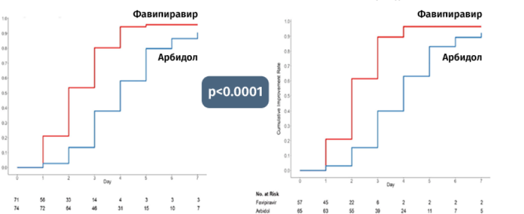
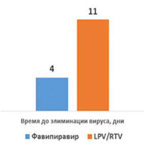
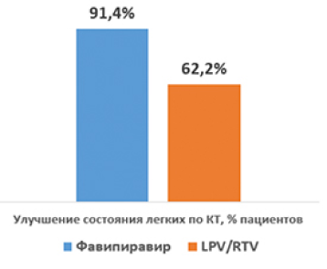
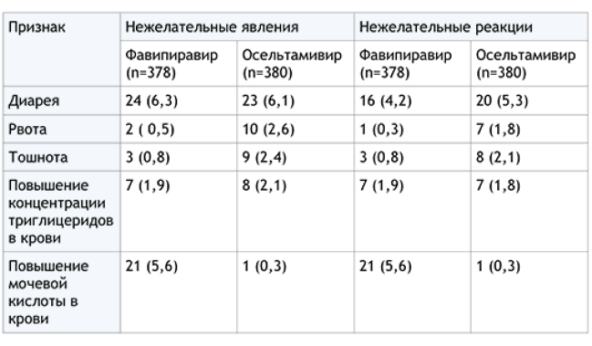
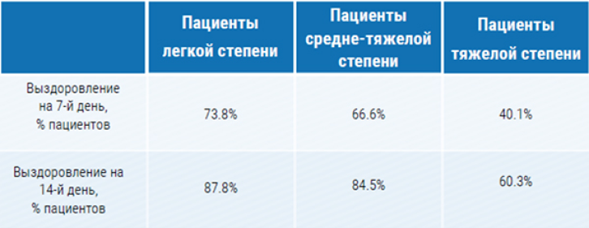
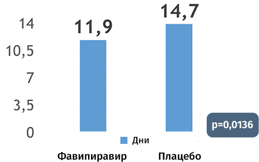

ФАВИПИРАВИР
ФАВИПИРАВИР – ингибитор РНК-зависимой-РНК-полимеразы (RdRp) – фермента, который необходим для размножения вируса. Разработан в Японии для лечения различных типов гриппа, устойчивых к существующим средствам терапии.
ДВОЙНОЙ МЕХАНИЗМ ДЕЙСТВИЯ
1
БЛОКИРУЕТ
РАЗМНОЖЕНИЕ
ВИРУСА В ОРГАНИЗМЕ
РАЗМНОЖЕНИЕ
ВИРУСА В ОРГАНИЗМЕ
2
ЗАПУСКАЕТ ПРОЦЕССЫ
САМОУНИЧТОЖЕНИЯ
ВИРУСНЫХ ЧАСТИЦ
САМОУНИЧТОЖЕНИЯ
ВИРУСНЫХ ЧАСТИЦ
ФАВИПИРАВИР метаболизируется в клетках до АКТИВНОЙ ФОРМЫ (фавипиравир-РТФ)
АКТИВНАЯ ФОРМА ФАВИПИРАВИРА селективно взаимодействует с RdRp вируса и действует в двух направлениях
В исследованиях и при применении препарата в реальной клинической практике доказана эффективность в отношении:
Вируса гриппа штаммов типа А, В и С
(включая H1N1, H5N1, H7N9)
(включая H1N1, H5N1, H7N9)
Риновирус
Респираторно-синцитиальный вирус
Вирус Эболы
Филовирусы
Буньявирусы (включая острую лихорадку с
тромбоцитопеническим синдромом Аренавирусы
тромбоцитопеническим синдромом Аренавирусы
Норовирусы
Флавивирусы
Альфавирусы
Гантавирусы
ФАВИПИРАВИР РЕКОМЕНДОВАН В КАЧЕСТВЕ ЭТИОТРОПНОЙ ТЕРАПИИ COVID-19 СОГЛАСНО ВРЕМЕННЫМ МЕТОДИЧЕСКИМ РЕКОМЕНАЦИЯМ МЗ РФ «ПРОФИЛАКТИКА, ДИАГНОСТИКА И ЛЕЧЕНИЕ НОВОЙ КОРОНАВИРУСНОЙ ИНФЕКЦИИ (COVID-19) (ВМР МЗ РФ)
ЭФФЕКТИВНОСТЬ ФАВИПИРАВИРА В ЛЕЧЕНИИ ПАЦИЕНТОВ С COVID-19 РЕЗУЛЬТАТЫ МЕЖДУНАРОДНЫХ КИ
Фавипиравир демонстрирует преимущество по сравнению с умифеновиром в отношении скорости исчезновения симптомов и частоты выздоровления на 7-й день терапии у пациентов с COVID-19 легкой степени течения.


Ускорение элиминации вируса
более, чем в 2 раза
более, чем в 2 раза

В 1,5 раза больше пациентов достигли улучшения состояния легких по КТ
Фавипиравир обеспечил более короткий период элиминации вируса по сравнению с лопинавир/ритонавиром в сочетании с более выраженными улучшениями состояния легких.
ПЕРЕНОСИМОСТЬ ФАВИПИРАВИРА СОПОСТАВИМА (А В РЯДЕ СЛУЧАЕВ ПРЕВЫШАЕТ) ТАКОВУЮ ПО СРАВНЕНИЮ С ОСЕЛЬТАМИВИРОМ И ДРУГИМИ ПРОТИВОВИРУСНЫМИ СРЕДСТВАМИ
Нежелательные явления и нежелательные реакции, В КИ III фазы при вирусе гриппа.

Не отмечено влияние фавипиравира на интервал QT при применении в рекомендуемых дозах. В одном исследовании при применении у пациента с вирусом Эбола в дозе 6 г в первый день и 2,4 г в последующие дни наблюдалось удлинение интервала QT, при выписке из больнице показатели были в пределах нормы.
АНАЛИЗ РЕЗУЛЬТАТОВ 29 КЛИНИЧЕСКИХ ИССЛЕДОВАНИЙ (4299 ПАЦИЕНТОВ) ПОКАЗАЛ СОПОСТАВИМЫЙ ПРОФИЛЬ БЕЗОПАСНОСТИ ФАВИПИРАВИРА ПО СРАВНЕНИЮ С ОСЕЛЬТАМИВИРОМ, УМИФЕНОВИРОМ, LPV/RTV **
** LPV/RTV - лопинавир+ритонавир
ОБСЕРВАЦИОННОЕ ИССЛЕДОВАНИЕ ПРИМЕНЕНИЯ ФАВИПИРАВИРА В РУТИННОЙ КЛИНИЧЕСКОЙ ПРАКТИКЕ У БО ЛЬНЫХ COVID-19 РАЗНОЙ СТЕПЕНИ ТЯЖЕСТИ ПОД ЭГИДОЙ NATIONAL CENTER FOR GLOBAL HEALTH MEDICINE (COVID-19 REGISTRY JAPAN)
N = 2,158 человек (52.3% страше 60 лет, 67.1% мужчины)
Наличие сопутствующих заболеваний, ухудшающих прогноз (диабет, ССЗ, хронические заболевания легких, уммуносупрессивные состояния) – 49.2% пациентов.
45.2% – легкая степень
43.9% – средне-тяжелая степень
10.9% – тяжелая степень
43.9% – средне-тяжелая степень
10.9% – тяжелая степень

Частота НЯ: 24.65%
Эффективность препарата: 92.4% для лиц ≤59 лет и 73.8% для лиц ≥60 лет.
ФАВИПИРАВИР ПОДТВЕРДИЛ КЛИНИЧЕСКУЮ ЭФФЕКТИВНОСТЬ В ЛЕЧЕНИИ ПАЦИЕНТОВ С COVID-19 В РАНДОМИЗИРОВАННОМ ПЛАЦЕБО-КОНТРОЛИРУЕМОМ ИССЛЕДОВАНИИ В ЯПОНИИ
Anti-influenza drug Avigan® Tablet Meets Primary Endpoint in Phase III Clinical Trial in Japan for COVID-19 patients.
Количество пациентов: 156 человек.
Диагноз: COVID-19 c неосложненной пневмонией.
Дизайн: рандомизированное, плацебо-контролируемое, слепое, сравнительное исследование
Конечные точки: время до элиминации вируса, время до избавления от лихорадки, нормализации уровня сатурации и состояния легких по КТ.

Терапия фавипиравиром обеспечила значимо более быстрое достижение первичных конечных точек терапии: элиминации вируса, нормализации температуры тела, нормализации уровня насыщения крови кислородом, улучшение состояния легких по данным КТ HR 1.593 (95% confidence interval of 1.024 – 2.479)
Информация предназначена для специалистов здравоохранения
РЕЗОЛЮЦИЯ СОВЕТА ЭКСПЕРТОВ: ВОЗМОЖНОСТИ ЭТИОТРОПНОЙ ТЕРАПИИ РЕСПИРАТОРНЫХ ИНФЕКЦИЙ, ВЫЗВАННЫХ РНК-ВИРУСАМИ. ТЕРАПИЯ. Том: 7 Номер: 5 (47) Год: 2021 Страницы: 193-195
Балыкова Лариса Александровна, Грановская Марина Викторовна, Заславская Кира Яковлевна, Симакина Елена Николаевна, Агафьина Алина Сергеевна, Иванова Анастасия Юрьевна, Колонтарев Константин Борисович, and Пушкарь Дмитрий Юрьевич. "НОВЫЕ ВОЗМОЖНОСТИ НАПРАВЛЕННОЙ ПРОТИВОВИРУСНОЙ ТЕРАПИИ COVID-19: РЕЗУЛЬТАТЫ МНОГОЦЕНТРОВОГО КЛИНИЧЕСКОГО ИССЛЕДОВАНИЯ ЭФФЕКТИВНОСТИ И БЕЗОПАСНОСТИ ПРИМЕНЕНИЯ ПРЕПАРАТА АРЕПЛИВИР" Инфекционные болезни: Новости. Мнения. Обучение, vol. 9, no. 3 (34), 2020, pp. 16-29.